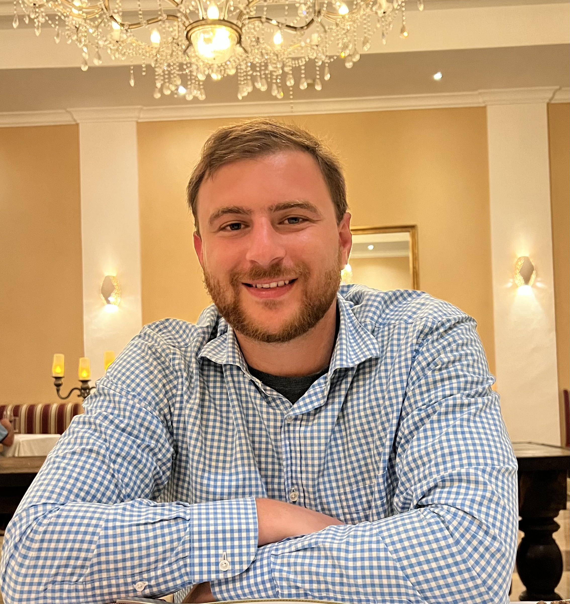

About Me
My name is Ramsey Tisani, and I appreciate the world for all it has to offer. It is our duty to not only maintain the natural beauty of this planet, but to stay focused on improving humanity. Innovation of technology allows us to connect with people across the world, and through that interaction we have the chance to learn more about other cultures.
Hiking has long been my acticity of choice, in the form of exercising the muscles and mind. Anything can become routine...yet if you hike everyday, each day will offer a different experience. Some days are focused on the appeal to the eye, like how the landscape changes after a heavy rainstorm as small creeks populate a desert landscape. Other days are to explore a different part of your mind in nature. A therapeutic approach, is to go early in the mornings and allow the the hike to clear the fog of your mind as you plan for a bright future ahead.
I graduated from cal state long beach, a school I very much took pride in attending. The fascinating truth is that the campus is evidently a melting pot of different cultures, ideas, and classes. Every professor had a unique style of relaying their material, and not one was repetitive in their teaching. I can confidently say that my experience there serves as an excellent foundation to coding here at the bootcamp. Software has, and continues to change the world for the better. The different languages each carry their own weight into further innovating technology that branches into better healthcare, a cleaner environment, and a safer planet.